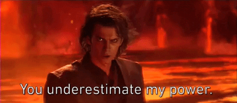

star wars episodio 3: la venganza de los stth
La trama describe una época en la que los Caballeros Jedi se han esparcido por toda la galaxia, dirigiendo un
ejército clon masivo para enfrentar a los Separatistas Galácticos, tres años después del inicio de las Guerras
Clon. El Canciller Palpatine fue secuestrado y el Maestro Jedi Obi-Wan Kenobi, acompañado de su aprendiz Anakin
Skywalker, es enviado a rescatarlo en una misión, donde también debe eliminar a los Líderes Separatistas, el
Conde Dooku y el General Grievous, para concluir el conflicto galáctico. Después de ser rescatado, el Canciller
fortalece su amistad con Anakin, para poder convencerlo de que existen mayores beneficios en el Lado Oscuro de
la Fuerza, que del Lado Luminoso. La Orden Jedi empieza a sospechar de la amistad entre el Canciller y Anakin,
por lo que intenta averiguar los verdaderos objetivos de Palpatine. Cuando el Canciller se descubre,
repentinamente, como el siniestro Lord Sith Darth Sidious, los destinos de la Orden Jedi y de la República
Galáctica se encuentran expuestos ante un inminente peligro.
¡Guerra! La República se desmorona bajo los ataques del despiadado Conde Dooku, señor de los Sith. Hay
héroes en ambos bandos. El mal está por doquier.
En una maniobra audaz, el diabólico líder droide,
General Grievous, ha entrado a la capital de la República y secuestrado al canciller Palpatine, líder
del
Senado Galáctico.
Mientras el Ejército Droide Separatista trata de huir de la asediada capital con su
valioso rehén, dos caballeros Jedi dirigen una misión desesperada para rescatar al canciller cautivo...
Reparto
| Ewan McGregor
|
Obi-Wan Kenobi
|
| Hayden Christensen
|
Darth Vader
|
| Natalie Portman
|
Padmé Amidala
|
| Ian McDiarmid
|
Canciller Palpatine/Darth Sidious
|
| Samuel L. Jackson
|
Mace Windu
|
| Christopher Lee
|
Conde Dooku
|
| Frank Oz
|
Yoda
|
| Jimmy Smits
|
Senador Bail Organa
|
| Anthony Daniels
|
C-3PO
|
| Peter Mayhem |
Chewbacca |
| Ahmed Best |
Jar Jar Binks |
| Matthew Wood
|
General Grievous
|
| Silas Carson |
Ki-Adi-Mundi y Nute Gunray |
| Jay Laga'aia |
Capitán Typho |
| Bruce Spence
|
Tion Medon
|


recaudación
La película fue un buen éxito y recaudó 848 millones de dólares. Fue la segunda más taquillera del 2005, sólo
superada por Harry Potter y el cáliz de fuego, pero recaudó más que ésta en Estados Unidos. Esta película en
la primera semana obtuvo 108 millones de dólares solamente en Estados Unidos, esto habla de que la película
fue un gran éxito.